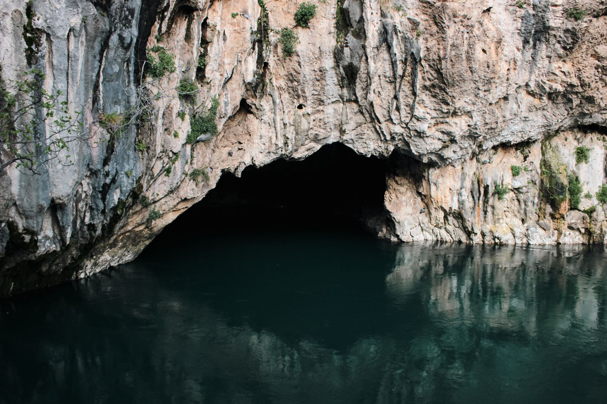

Brief, decisions, outcome — the same three movements as the reports themselves. One of these studies proved a connection nobody wanted. One watched a spring change character through a drought. One found nothing at all, and is in the log because of it.
STUDY 07
The connection the desk study ruled out
The brief
An aggregates operator proposed extending a limestone quarry toward a plateau above a drinking-water spring. Its own desk study, working from surface topography, placed the spring's catchment on the far side of a ridge — safely clear of the extension. The regulator asked for evidence rather than contours. The question: does water sinking inside the proposed extension reach the spring?
The decisions
We walked the plateau first and found what desk studies miss: a doline field and a swallow hole inside the proposed extension that took a whole stream after rain. We waited for a rising flow — a trace at low water would have answered a question nobody was asking — then injected uranine at the swallow hole, with charcoal receptors and automatic samplers at the spring and at two control springs beyond the ridge. Landowner consent, the water utility and the cave-rescue service were all notified before a gram of dye moved.
The outcome
The dye arrived at the drinking-water spring in under three days — a fast, conduit connection — and at neither control spring. The catchment boundary moved to where the water had always drawn it. The operator redesigned the extension back from the plateau edge, the regulator accepted the revised protection zone, and the desk study's tidy line survives in my filing cabinet as a teaching exhibit. The connection was the result; the redesign was the client being sensible with it.
“The desk study told us what we wanted to hear. Dr Kovač's trace told us the truth in time to redesign around it — a cheaper outcome than the inquiry we were heading for.”
Study record
Client
Aggregates operator
Study type
Dye-tracer test, single point
Terrain
Dinaric karst plateau
Tracer
Uranine, with charcoal receptors
First arrival
Under 3 days at the spring
Status
Complete — boundary revised

Reference photograph — a cave entrance and spring pool in Bosnia and Herzegovina: Dinaric karst of the same character as the study terrain. It is not the study spring. Photo: Necip Duman, Pexels.
STUDY 11
The drought year, read honestly
The brief
A regional water utility draws on a karst spring whose summer behaviour decided when drought measures began. Their record was a gauge board read by eye, with gaps exactly where the interesting years were. The question: how does this spring actually spend its storage, and can we know a hard summer is coming while there is still time to act?
The decisions
We installed a pressure logger and a rated section, gauged by current meter across the flow range, and committed to three seasons before drawing conclusions. Recessions were fitted in segments — conduit, fissure, storage — never as one heroic α. Through the drought summer the pattern shifted in plain sight: the fast segment shortened, and by August the spring was running almost entirely on its slow storage segment.
The outcome
The interpretation said what the data said: the spring's recession character had changed, not just its flow. The utility now keys its drought stages to the late-recession coefficient — when the storage segment's α starts to climb, storage is draining faster than the season can afford — and the trigger fired six weeks earlier in the drought year than the old calendar rule would have. The monitoring continues; a record you stop keeping is a record that stops helping.
Reference photograph — the Soča gorge at Tolmin, Slovenia: a Dinaric river reach in limestone. It is not the monitored spring. Photo: Simon S., Pexels.
STUDY 13
The trace that returned nothing
The brief
A road tunnel's alignment crossed ground suspected of draining to a spring used by a village. The developer needed to know whether the tunnel's drainage could reach that spring. The question was a connection — and the honest answer turned out to be: not proven.
The decisions
We injected at a swallow hole on the alignment and placed receptors at the village spring and at a borehole between. Then the season refused to cooperate: flows stayed low for the full six weeks of sampling. Rather than extend quietly and hope, we reported at the agreed date with the detection limits stated in numbers — what concentration would have been seen, and therefore what the silence actually rules out.
The outcome
No tracer was recovered above detection at either receptor. The report's conclusion is one sentence long and it is not "there is no connection": it is that no connection was proven under the flow conditions tested, with a recommendation to repeat the trace on a rising flow before the alignment decision is treated as settled. The developer funded the repeat. A negative at the wrong flow is a hypothesis with good manners — it still has to be tested.
Study record
Client
Road infrastructure developer
Study type
Dye-tracer test, two receptors
Sampling
6 weeks, low-flow conditions
Recovery
None above detection
Status
Complete — repeat at high flow funded
BREAKTHROUGH RECORD — STUDY 13
Village spring receptor · weeks 1–6 · all samples below detection
Borehole receptor · weeks 1–6 · all samples below detection
——— the line stays at the detection limit ———
No photograph accompanies this study. The result was an absence, and the record above is its portrait.
Next entry
Your study could be the next one in the log.
It will be written up the same way — including if the answer is nothing. Especially then.